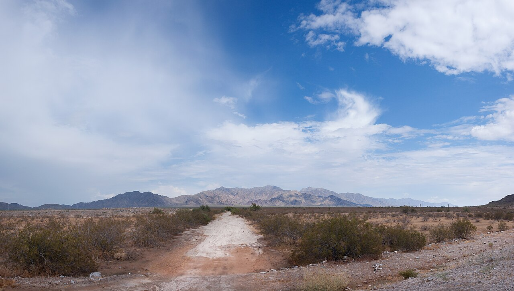

~15 min
Phoenix Raceway
One-mile tri-oval in Avondale. NASCAR's Championship Weekend lands here every November. Spring brings NASCAR, IndyCar, and ARCA back-to-back. Buy November early.
Avondale, AZSchedule →

Engines, canyons, and live music, all within reach of the new house. Here's where to go first.
Phoenix Raceway is basically next door, built into the Estrella foothills. Dirt tracks, drag strips, and demo derbies fill in the rest.
One-mile tri-oval in Avondale. NASCAR's Championship Weekend lands here every November. Spring brings NASCAR, IndyCar, and ARCA back-to-back. Buy November early.

A 1/3-mile clay oval in Peoria. Weekly sprint cars, modifieds, and stock cars throwing dirt under the lights. The real Saturday-night Arizona experience.

Quarter-mile NHRA drag strip plus road courses and drag-boat racing in Chandler. Formerly Firebird. Also runs drive-a-real-supercar days, no experience needed.

Buckeye runs spring and fall derbies (cars, trucks, even lawn mowers). The Arizona State Fair every October brings tractor pulls, mud bogs, and demo derbies to the Grandstand.
Day hikes start minutes from the house. The bucket-list trips are a road trip away. One catch: timing is everything (see When to Go).


Your home trails, minutes away. Rainbow Valley loop (4.8 mi) rolls through saguaro and wildflowers. Easy after-work sunset walks without touching a freeway.

The other local park, just north. A short waterfall trail after rain, petroglyphs, and big desert views. Great for the days you want a quick win.

The closest real wilderness. Rugged, remote, and right on the edge of the metro. Day hikes or multi-night backcountry, your pick.


A free festival on the lake walking distance from home, plus a deep bench of venues a short drive into Phoenix.


1,800-cap room in a restored downtown auto building, skyline behind it. National touring acts most nights, great patio.

A 300-seat room at the Musical Instrument Museum. Best-sounding small venue in the Valley, with globe-spanning programming. Worth a night even if you don't know the act.

Tempe. 1,500+ national acts since 2003, big names and rising ones. Heads-up: slanted floor, tight parking. Get there early.

The 18,000-seat downtown arena. Where the big tours land. Also home to the Suns and Mercury if you want the full night out.

Downtown Phoenix. The local favorite, ~500 capacity, named the city's top small venue five years running. Bar, patio, in-house Mexican food. Catch acts before they blow up.

Right in town. Free community concerts, Rock the BBQ, holiday events, and a July 4th drone show at the Ballpark. Easy nights, no freeway.
Salt River rafting. The marquee hikes. Lakeside Festival in March. The best window, period.
Havasu and Grand Canyon reopen for comfort. State Fair derbies in October. NASCAR Championship in November.
Too hot for big hikes. Switch to night racing at the speedways, indoor venues, and early-morning desert walks.
Start small: a sunset hike at Estrella, minutes from the door. Save the road trips for a cooler month.